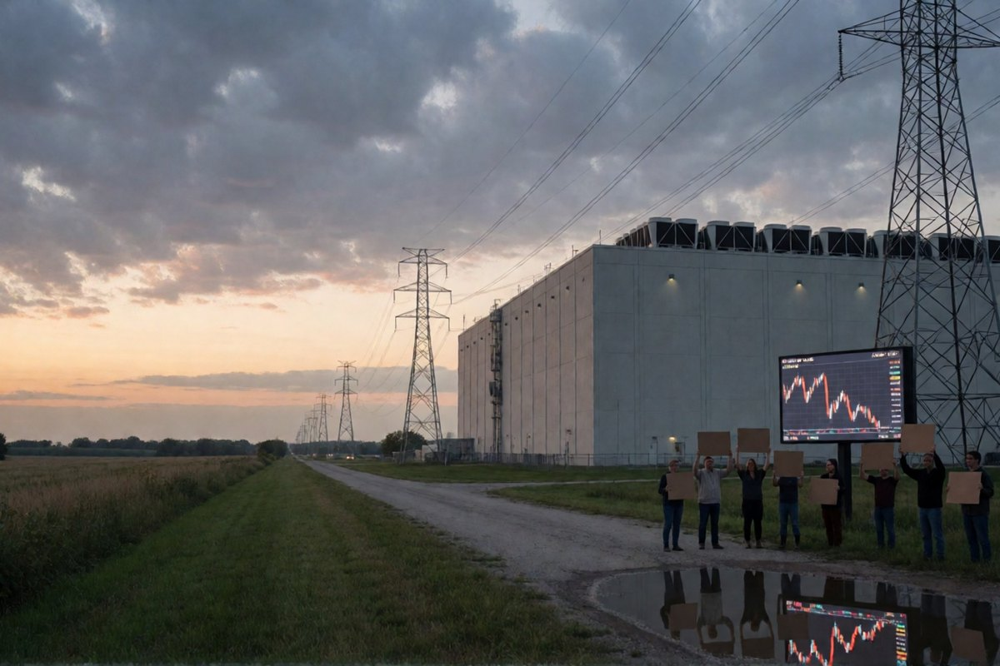

Geopolitica · 7 novembre 2026
Gli americani votano contro i data center, e Wall Street crolla

Nelle elezioni di metà mandato quarantuno quesiti locali in dieci Stati chiedevano limiti alle grandi fabbriche dell'intelligenza artificiale: hanno vinto quasi tutti. Due giorni dopo il Nasdaq ha perso il 5,5 per cento.
di Franco Zanghì
Le elezioni di metà mandato negli Stati Uniti non hanno cambiato soltanto il Congresso. In decine di città gli elettori hanno detto no ai data center, le grandi infrastrutture che fanno funzionare l'intelligenza artificiale. E due giorni dopo, a Wall Street, i titoli tecnologici hanno vissuto una delle giornate peggiori degli ultimi anni.
Quarantuno quesiti, un solo sì
Martedì 3 novembre, insieme ai candidati, in dieci Stati si votava su 41 quesiti locali che riguardavano i data center. Secondo la rete americana CNBC gli elettori hanno scelto restrizioni o divieti quasi dappertutto, con una sola eccezione: Harwood, nel Nord Dakota. Lo Stato con più quesiti era l'Ohio, con 21 proposte.
A Sunbury, vicino a Columbus, si votava il divieto per i data center che consumano più di 25 megawatt: un voto che, secondo l'agenzia Reuters, può fermare un investimento di Amazon da 2 miliardi di dollari.
Le ragioni della protesta sono soprattutto due: le bollette dell'elettricità, salite in molte zone del paese, e l'acqua. Un data center consuma energia come una città e acqua per raffreddare i server, e lascia pochi posti di lavoro stabili. È un tema che ha attraversato gli schieramenti, nelle città democratiche come in quelle repubblicane.
La giornata nera dei mercati
Giovedì 5 novembre il Nasdaq, l'indice dei titoli tecnologici, ha perso il 5,5 per cento: secondo CNBC è la giornata peggiore dall'aprile del 2025. Il Dow Jones ha perso più di 1.800 punti e l'S&P 500 il 4,4 per cento. Nvidia, il simbolo della corsa all'intelligenza artificiale, è scesa di oltre il 9 per cento. In una sola seduta sono andati in fumo più di 2.000 miliardi di dollari.
Il legame fra le due cose lo spiegano gli analisti citati da Al Jazeera e da Bloomberg: con i democratici vincitori delle elezioni e con gli elettori che respingono i data center, gli investitori temono che la costruzione delle infrastrutture dell'intelligenza artificiale rallenti. Secondo la banca svizzera UBS è a rischio circa il 30 per cento della nuova capacità di data center prevista negli Stati Uniti per il 2028. Greg Taylor, gestore di un fondo canadese, ha detto di avere avuto dei flashback del 2008 e del 2001.
Dalla Casa Bianca il consigliere economico Kevin Hassett ha risposto che l'ondata democratica non fermerà la costruzione dei data center.
Perché riguarda anche l'Europa
I risparmi di molti europei, attraverso fondi comuni e piani pensionistici, sono investiti proprio in quei titoli tecnologici americani. E anche in Europa, e in Italia, si stanno progettando grandi data center: la domanda che gli americani hanno messo nelle urne, cioè chi paga l'energia e l'acqua, arriverà presto anche qui.
Per anni la corsa all'intelligenza artificiale è stata raccontata come una sfida fra Washington e Pechino. Martedì ha trovato un limite molto più vicino: la bolletta delle famiglie americane. Tre cose da guardare adesso: se le grandi aziende spostano i progetti in altri Stati o all'estero, se il nuovo Congresso mette mano alle regole sull'energia dei data center, e se il crollo di giovedì è stato un colpo di panico o l'inizio di una correzione più lunga.
Fonti
- CNBC, «Data center double-down: Hassett says blue wave won't stop AI build-out», 6 novembre 2026
- Northeast Times, «Nasdaq Falls 5.5% Two Days After Democrats' Sweep as Investors Weigh Fears of a Slower AI Data Center Buildout», 6 novembre 2026
- ABC News, «Dow plunges 1,800 points, wiping out gains from midterm results rally», 5 novembre 2026
- Commercial Observer, «Post-Election Tech Selloff May Hit Properties Linked to AI», 6 novembre 2026
- Reuters, Al Jazeera, Bloomberg, UPI e NPR per le cifre su Sunbury, sulla stima UBS, sulle perdite di Nvidia e sul valore bruciato in borsa
Sul numero dei quesiti le fonti non coincidono: CNBC e Ballotpedia ne contano 41, Al Jazeera 45. Qui si riporta la cifra di 41. Anche il valore bruciato in borsa varia secondo le stime, fra 2.000 e 2.500 miliardi di dollari: la pagina indica la cifra più prudente. I dati di mercato sono riferiti alla seduta del 5 novembre 2026.